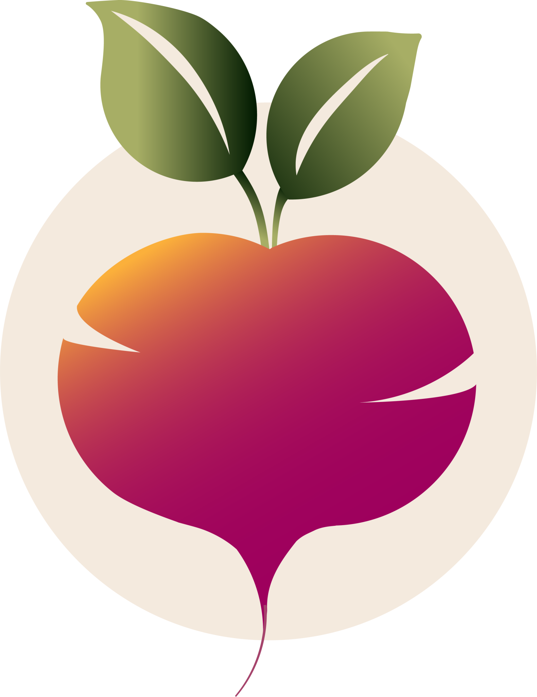
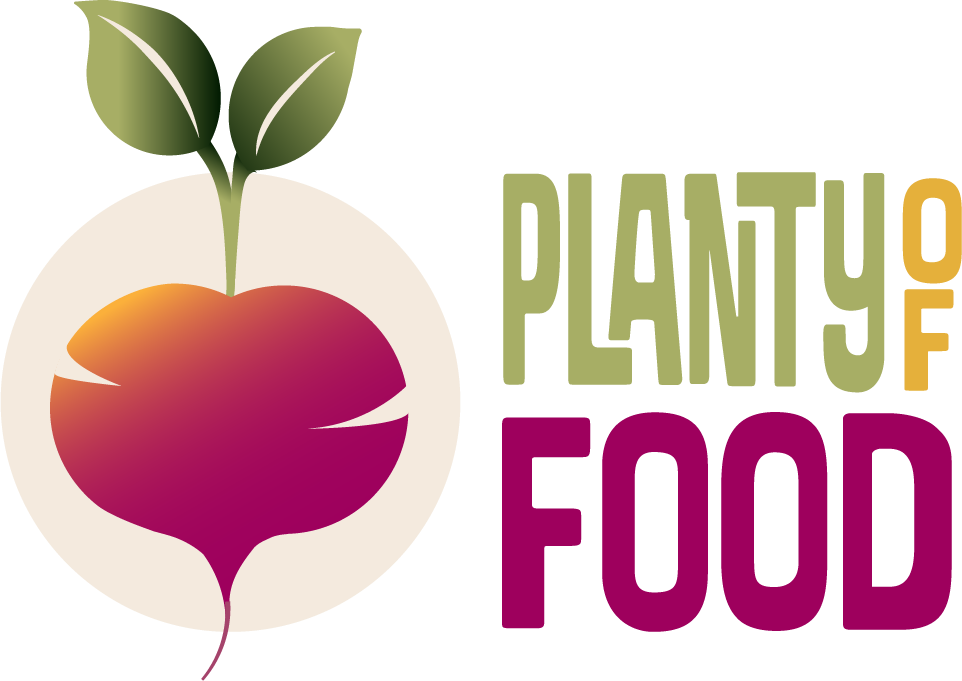
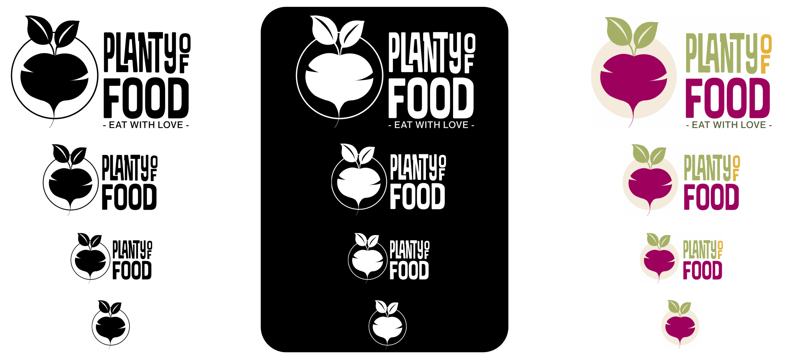
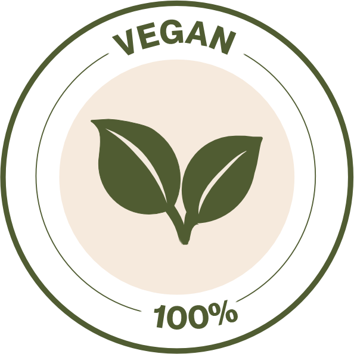
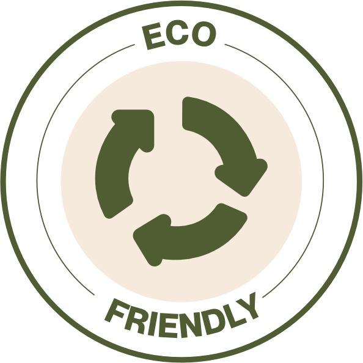
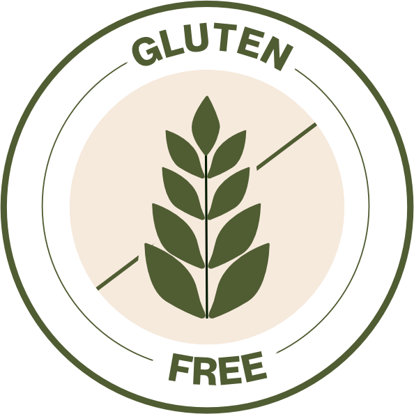
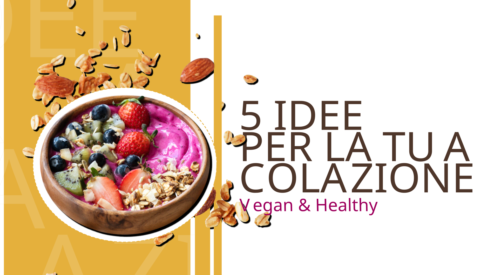

Brand
Guidelines
Who said vegan food has to be boring?
When I started researching the competitive landscape for Planty of Food, a plant-based e-commerce, I found the same thing everywhere: green, leaves, and more green.
So I decided to break that assumption entirely.
I built the brand around a bold, daring palette and a visual language that feels vibrant and confident,
with the goal of attracting a younger audience and making Planty of Food instantly stand out from the competition.
Logo Concept
Roots, loveand circularity.
For Planty of Food, I moved away from a literal plant-based visual language. Instead of relying only on leaves and green tones, I focused on the values behind the brand: care for the planet, circularity, respect and conscious choices. The beetroot-inspired symbol brings together roots, earth and love, creating a logo that feels organic, warm and memorable.
• Logo & Main Variations


• Logo Variations


Sunflower Gold
HEX #E5B03B
RGB 229 176 59
CMYK 0 23 74 10
Dark Raspberry
HEX #9E005D
RGB 158 0 93
CMYK 0 100 41 38
Muted Olive
HEX #A7AE65
RGB 167 174 101
CMYK 4 0 42 32
Olive Leaf
HEX #525D37
RGB 82 93 55
CMYK 12 0 41 64
Deep Mocha
HEX #4F362B
RGB 79 54 43
CMYK 0 32 46 69
Linen
HEX #F4EADE
RGB 244 234 222
CMYK 0 4 9 4
Color System
Not just green.Full of flavor.
Plant-based food is often represented with the same predictable green palette. For Planty of Food, I wanted something richer, warmer and more memorable: a color system that communicates variety, positivity and the vibrant world of plant-based eating.
Typography
Two fonts,one clear voice.
Planty of Food combines an expressive serif with a soft, versatile sans serif to create a visual language that feels bold, warm and easy to read.
Abril Fatface is used mainly for titles and key messages: its thick curves and thin serifs echo the organic shapes of the logo and help the brand stand out with confidence.
Neue Montreal supports the system across subtitles, body copy and digital interfaces. Its clean structure and multiple weights make the hierarchy flexible, clear and consistent.
Abril Fatface · Regular
A B C D E F G H I J K L M N
O P Q R S T U V W X Y Z
a b c d e f g h i j k l m n
o p q r s t u v w x y z
1 2 3 4 5 6 7 8 9 0
Neue Montreal · Regular
A B C D E F G H I J K L M N
O P Q R S T U V W X Y Z
a b c d e f g h i j k l m n
o p q r s t u v w x y z
1 2 3 4 5 6 7 8 9 0







Plant-based,
but never predictable.
Final Outcome
A brand identityfull of flavor.
The final identity gives Planty of Food a distinctive and energetic voice in a market often dominated by predictable green visuals. Through bold colors, expressive typography and a flexible visual system, the brand feels warm, contemporary and easy to recognize across digital and social touchpoints.